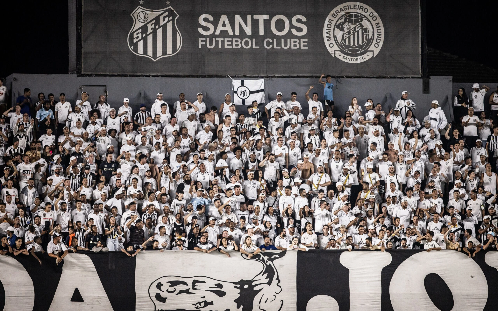
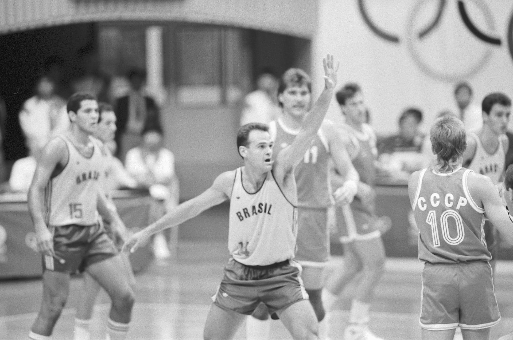
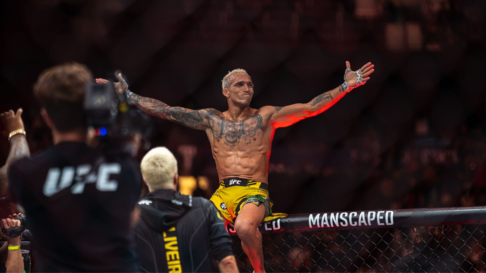

O Santos Futebol Clube comemora mais um ano de história como um dos clubes mais tradicionais do país. Fundado em 1912, o time é conhecido mundialmente por revelar grandes talentos e por seu estilo de jogo ofensivo.
Ao longo das décadas, o clube construiu uma trajetória vitoriosa, marcada por títulos importantes e pela formação de ídolos eternos, como Pelé, considerado por muitos o maior jogador da história do futebol.
A data é celebrada por torcedores e também pelo próprio clube nas redes sociais, com homenagens e recordações de momentos marcantes.

Oscar morreu hoje, dia 17/04/2026, após dar entrada na manhã desta sexta-feira no Hospital e Maternidade Municipal Santa Ana (HMSA), em Santana de Parnaíba (SP), em parada cardiorrespiratória. Ele deixa a esposa, Maria Cristina, e dois filhos, Filipe e Stephanie.
A precisão nos arremessos, que lhe rendeu o apelido de "Mão santa", ele marcou época com sua incrível capacidade de pontuar. Mesmo após sua aposentadoria, Oscar foi inspiração para novas gerações e é frequentemente lembrado como símbolo do basquete brasileiro.

Peso-leve brasileiro domina havaiano por cinco assaltos e conquista prêmio dos lutadores mais casca-grossa da companhia. Brasileiros fazem bonito com nocautes
O lutador mais casca-grossa do UFC é brasileiro. O paulista Charles "Do Bronx" Oliveira conquistou o cinturão BMF - sigla de "Baddest Mother***" ("Maior casca-grossa", em tradução livre) ao atropelar o americano Max Holloway, campeão anterior, e vencer por decisão unânime (triplo 50-45), na luta principal do UFC 326, neste sábado (7), em Las Vegas.